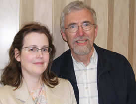

Guardians
Patty Croteau, CPG, Guardianship Agency Supervisor, 425-885-1006 x 102
Gordon Ellison-Oslin, CPG, Guardianship Specialist, 425-885-1006 x 117
Susan Dougherty-Guild, CPG, Guardianship Associate
Staff Qualifications:
- Washington State Certified Professional Guardian In 1999 a Supreme Court Order required professional guardians to become certified.
- Continuing Education Classes or seminars related to guardianship that are accepted by the Administrator of the Courts.
Patty Croteau, BA, JD, CPG
I have been a Certified Professional Guardian for over ten years; but, the real inspiration for my work with the ID/DD population lies closer to home. My son, Quinn, has autism. Although his use of language is rudimentary, and he has no social graces, Quinn shines brightly with his happy nature, energy, and intelligence. As I meet my clients at Bridge, I see similar kinds of luminosity along with the disabilities. I tell my son, "Everyone has something that makes life difficult. For you, it is autism. For another person, it is diabetes. For another person, it may be mobility limitations." I don't think this makes him feel better, but perhaps it makes him feel less alone. I love that about Bridge. We go farther than traditional guardianship services to bridge the isolation of those we serve. It is a real honor to be part of God's plan in blessing, and being blessed by, the disabled.
Gordon Ellison-Oslin, BA, CPG
Before coming to Bridge in 2007, I worked with people with ID/DD for many years. Through personal friends and family, my wife, Kristin, and I are both deeply and directly aware of how connecting with people with disabilities enriches our own lives. My favorite part of working for Bridge is being with the people we serve. I appreciate their unique personalites and truly enjoy our time together. I am happy to be part of the genuine caring and commitment to excellence that Bridge provides through all of its programs serving those in need.
Susan Dougherty-Guild, BA, MSW, CRC & CPG
I have worked with the disabled community for over 30 years in the medical, mental health and rehabilitation fields, as a social worker and vocational counselor. I have had the privilege of working with people with physical, cognitive and sensory disabilities in their homes, places of employment and in the community. The Bridge Guardianship program provides advocacy and support for our diverse Guardianship clients. The personnel at Bridge are great teammates in providing individualized services to meet the needs of our clients. I am thankful for the opportunity to learn from both my clients and colleagues on a daily basis.